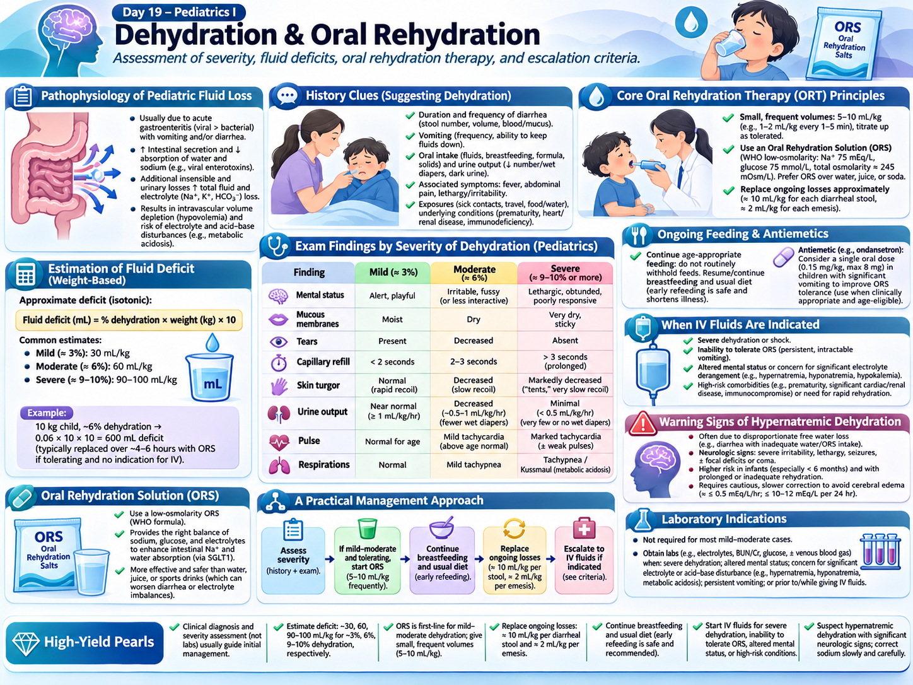
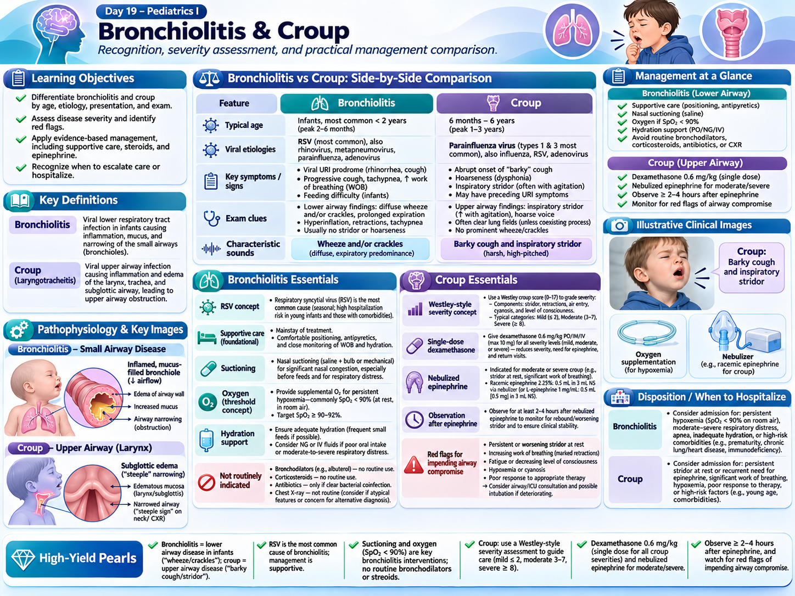

Day 19 — Pediatrics I
Growth and developmental surveillance, childhood vaccination principles, fever assessment, dehydration and oral rehydration, bronchiolitis/croup, pediatric asthma, otitis media and tonsillitis, and pediatric gastroenteritis.
8 visuals
1. Growth Charts & Developmental Milestones
Academically focused pediatric review with board-style, clinical emphasis.
Core concepts
- Plot weight, length/height, head circumference (up to 2 years), and BMI (≥2 years) at every well visit using age-appropriate growth charts.
- Use WHO growth standards for children 0–2 years and CDC charts for 2–20 years. Growth velocity often matters more than a single value.
- Normal development is tracked across gross motor, fine motor, language, and social/adaptive domains.
High-yield milestone anchors
- 2 months: social smile, coos, lifts head when prone.
- 6 months: rolls both ways, transfers objects, babbles, sits with support.
- 9 months: sits independently, immature pincer grasp, stranger anxiety, responds to name.
- 12 months: stands/cruises, 1–3 words, points, mature pincer grasp.
- 18 months: walks independently, several words, scribbles, points to body parts.
- 2 years: 2-word phrases, runs, follows 2-step commands, begins pretend play.
When to investigate
- Crossing two major percentile lines, poor weight gain, declining height velocity, or microcephaly/macrocephaly warrant evaluation.
- Developmental “red flags” include no social smile by 2 months, no babbling by 9 months, no single words by 15 months, or loss of milestones at any age.
- Assessment includes prenatal/perinatal history, nutrition, chronic disease review, hearing/vision screening, neurologic exam, and family growth patterns.
Clinical pearls
- Correct for prematurity when assessing growth and milestones during infancy.
- Consider autism screening around 18 and 24 months and always act on parental concerns, even if the brief screen is negative.
- A developmental delay is a reason for early-intervention referral; do not wait for severe delay to emerge.
🖼️ Growth Charts & Developmental Milestones Infographic
Day 19 study visual
2. Childhood Vaccination Principles
Academically focused pediatric review with board-style, clinical emphasis.
Why it matters
- Vaccination prevents serious infections such as measles, pertussis, invasive pneumococcal disease, rotavirus, and meningitis. Pediatric immunization is one of the highest-yield public-health interventions.
- Understand live attenuated versus inactivated/subunit/conjugate vaccines because this affects contraindications and timing.
Core schedule principles
- Use the routine age-based schedule whenever possible; most children who are behind can follow a catch-up schedule without restarting a series.
- Common routine series include HepB, DTaP, Hib, IPV, PCV, rotavirus, MMR, varicella, HepA, and annual influenza vaccination; adolescents receive Tdap, HPV, and meningococcal vaccines.
- Document lot number, site, route, date, and counseling for each dose.
Contraindications & precautions
- Live vaccines are generally avoided in significant immunocompromise and pregnancy.
- True contraindications are limited: e.g., anaphylaxis to a prior dose or vaccine component, severe combined immunodeficiency for rotavirus, or encephalopathy after pertussis-containing vaccine.
- Minor illness or low-grade fever is not usually a reason to defer vaccination.
Counseling pearls
- Explain expected reactions: local pain, low-grade fever, and mild irritability are common and usually self-limited.
- Emphasize herd protection, protection of vulnerable infants, and the risk of disease resurgence when coverage falls.
- When parents are hesitant, use clear, empathetic, evidence-based communication and recommend vaccines confidently.
🖼️ Childhood Vaccination Principles Infographic
Day 19 study visual
3. Fever in Infants & Children
Academically focused pediatric review with board-style, clinical emphasis.
Key definition
- Fever is typically defined as ≥38.0°C (100.4°F). In young infants, age and appearance determine the risk of serious bacterial infection (SBI) or invasive bacterial infection (IBI).
- A toxic-appearing child, poor perfusion, lethargy, seizures, or petechiae/purpura should immediately raise concern for sepsis, meningitis, or severe focal infection.
Age-based high-yield approach
- <28 days: treat as high risk; full sepsis evaluation, cultures, and hospitalization are usually required.
- 29–60 days: structured risk stratification using urinalysis/culture and inflammatory markers is common; many still need blood culture and selected lumbar puncture.
- 61–90 days and older: source-driven evaluation is more appropriate, but appearance always trumps age.
Testing pearls
- UTI is among the most common SBI sources in infants; obtain urinalysis and urine culture when indicated.
- Consider CBC, CRP/procalcitonin, blood culture, lumbar puncture, chest x-ray, or viral testing based on age, exam, and clinical suspicion.
- Antipyretics improve comfort but do not distinguish benign from serious illness.
Red flags
- Ill appearance, respiratory distress, dehydration, stiff neck, persistent vomiting, focal neurologic deficits, or immunocompromise require broader evaluation and lower threshold for admission.
- Parents should receive clear return precautions for worsening work of breathing, poor intake, reduced urine output, or altered mental status.
🖼️ Fever in Infants & Children Algorithm
Day 19 study visual
4. Dehydration & Oral Rehydration
Academically focused pediatric review with board-style, clinical emphasis.
Clinical assessment
- Estimate dehydration clinically as mild, moderate, or severe using mental status, tears, mucous membranes, capillary refill, urine output, and skin perfusion.
- Laboratory tests are not routinely required for mild dehydration; they are more useful in severe dehydration, shock, or concern for electrolyte/acid–base disturbance.
Oral rehydration therapy (ORT)
- ORT with commercial oral rehydration solution is first-line for most mild to moderate dehydration.
- Give small, frequent volumes — especially after emesis — and continue age-appropriate feeding, including breastfeeding.
- Ondansetron may improve ORT success in selected children with vomiting.
When IV fluids are needed
- Use IV isotonic crystalloid for shock, severe dehydration, or failed ORT. Reassess perfusion, heart rate, urine output, and mental status frequently.
- Replace ongoing losses and watch for associated electrolyte problems such as hyponatremia, hypernatremia, or hypoglycemia.
Pearls
- Common causes include gastroenteritis, poor intake, fever, and excessive insensible losses.
- Danger signs include no tears, very delayed capillary refill, oliguria, lethargy, sunken eyes/fontanelle, and weak pulses.
- Avoid free water alone in significant diarrheal illness; use proper ORS composition.
🖼️ Dehydration & Oral Rehydration Infographic
Day 19 study visual
5. Bronchiolitis & Croup
Academically focused pediatric review with board-style, clinical emphasis.
Bronchiolitis essentials
- Bronchiolitis usually affects infants <2 years, often due to RSV, and presents with coryza, cough, wheeze/crackles, tachypnea, and feeding difficulty.
- Severity is judged by work of breathing, apnea risk, hydration, and oxygenation rather than by chest x-ray alone.
Bronchiolitis management
- Treatment is mainly supportive: nasal suction, hydration, feeding support, and oxygen if hypoxemic.
- Routine bronchodilators, corticosteroids, antibiotics, and chest physiotherapy are generally not recommended in uncomplicated bronchiolitis.
- Admit if there is apnea, persistent hypoxemia, severe respiratory distress, or inability to maintain hydration.
Croup essentials
- Croup presents with barking cough, inspiratory stridor, and hoarseness, usually from viral subglottic inflammation.
- Dexamethasone is beneficial across severity levels; nebulized epinephrine is used for moderate to severe croup or stridor at rest.
Red flags / alternate diagnoses
- Toxic appearance, drooling, tripod position, very high fever, sudden onset without URI prodrome, or focal wheeze should trigger consideration of epiglottitis, bacterial tracheitis, foreign body aspiration, or pneumonia.
- Escalate urgently for impending respiratory failure, exhaustion, cyanosis, or reduced level of consciousness.
🖼️ Bronchiolitis & Croup Management Algorithm
Day 19 study visual
6. Pediatric Asthma
Academically focused pediatric review with board-style, clinical emphasis.
Diagnosis clues
- Think of asthma in children with recurrent wheeze, cough, chest tightness, dyspnea, or exercise/night symptoms, especially when there is a personal or family history of atopy.
- Older children can support diagnosis with spirometry demonstrating reversible airflow obstruction.
Acute exacerbation
- Initial management focuses on severity assessment, oxygenation, and rapid bronchodilation with albuterol. Moderate to severe cases benefit from early systemic corticosteroids; ipratropium may be added in the ED.
- Reassess after treatment using work of breathing, wheeze/air entry, speech, and SpO₂.
Controller therapy
- Inhaled corticosteroids (ICS) are the foundation of long-term control.
- Step-up therapy depends on symptom frequency, exacerbation risk, adherence, and inhaler technique; some children may be candidates for ICS-formoterol SMART strategies depending on age and guideline context.
- Every visit should review trigger avoidance, inhaler technique, and a written action plan.
High-risk features
- Silent chest, altered mental status, exhaustion, cyanosis, poor response to initial bronchodilator therapy, or persistent hypoxemia are emergency signs.
- Frequent oral-steroid bursts, prior ICU admission, or poor medication access increase future exacerbation risk.
🖼️ Pediatric Asthma Algorithm
Day 19 study visual
7. Otitis Media & Tonsillitis
Academically focused pediatric review with board-style, clinical emphasis.
Acute otitis media (AOM)
- AOM requires middle-ear effusion plus signs of acute inflammation such as bulging, erythematous tympanic membrane, ear pain, or fever.
- Common organisms are Streptococcus pneumoniae, Haemophilus influenzae, and Moraxella catarrhalis.
AOM management
- Provide analgesia for all children. Amoxicillin is typical first-line therapy when antibiotics are indicated.
- Observation with close follow-up is appropriate in selected older children with non-severe unilateral disease.
- Red flags include mastoiditis, toxic appearance, meningismus, or hearing/speech concerns.
Tonsillitis / pharyngitis
- Most sore throats are viral; Group A Streptococcus (GAS) becomes more likely with fever, tonsillar exudate, tender anterior cervical nodes, and absence of cough.
- Testing with rapid antigen detection or throat culture is used when GAS is clinically plausible; treat confirmed GAS to reduce symptom duration and prevent complications such as rheumatic fever.
- First-line therapy is usually penicillin or amoxicillin.
Red flags / complications
- Drooling, muffled “hot potato” voice, trismus, neck swelling, or unilateral tonsillar bulge suggest deep-neck infection or peritonsillar abscess.
- Consider dehydration, airway compromise, mastoiditis, or recurrent infection burden when disposition planning.
🖼️ Otitis Media & Tonsillitis Infographic
Day 19 study visual
8. Pediatric Gastroenteritis
Academically focused pediatric review with board-style, clinical emphasis.
Core presentation
- Most pediatric gastroenteritis is viral and self-limited, presenting with vomiting, diarrhea, abdominal cramps, and dehydration risk.
- The first step is to assess hydration severity, identify red flags, and consider alternative diagnoses such as surgical abdomen or sepsis.
Supportive management
- For most children, treatment centers on oral rehydration therapy, ongoing feeding, and monitoring urine output.
- A single dose of ondansetron may improve ORT success in selected children with ongoing vomiting.
- Avoid routine antimotility agents in young children.
When to test or treat further
- Stool studies are more useful for bloody diarrhea, prolonged disease, travel-associated illness, outbreaks, or immunocompromised patients.
- Antibiotics are reserved for selected bacterial illnesses such as Shigella, severe Campylobacter, or cholera; avoid routine antibiotics in uncomplicated viral disease or suspected STEC/EHEC.
- Continue breastfeeding or age-appropriate diet once hydration improves.
Red flags
- Bilious vomiting, severe focal abdominal pain, toxic appearance, blood in stool, severe dehydration, altered mental status, or poor perfusion require urgent escalation.
- Always counsel about hand hygiene, return precautions, and when to seek further care.
🖼️ Pediatric Gastroenteritis Algorithm
Day 19 study visual
📊 External QBank Progress — Day 19
Track any external pediatrics block separately from your study notes and visuals.